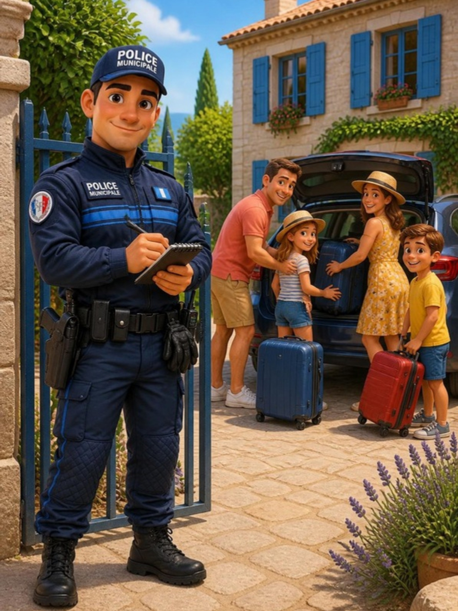
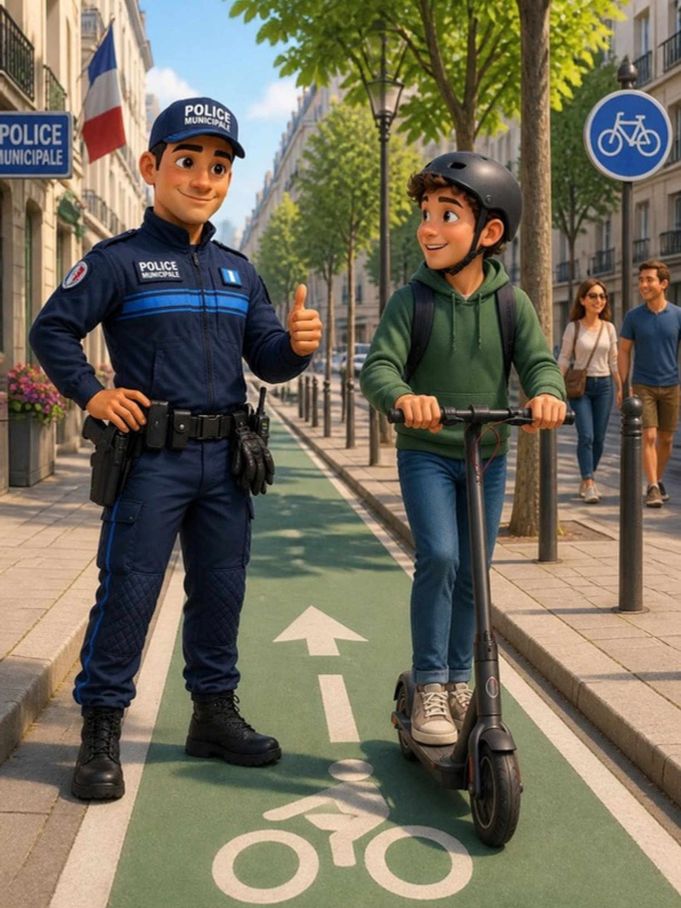
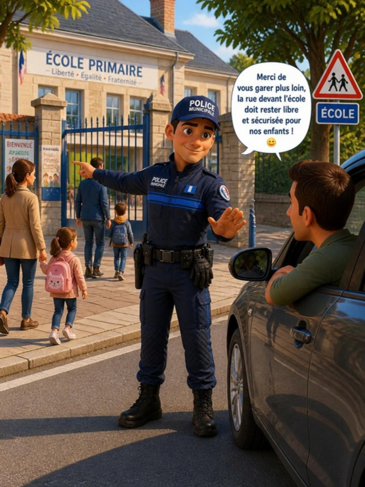
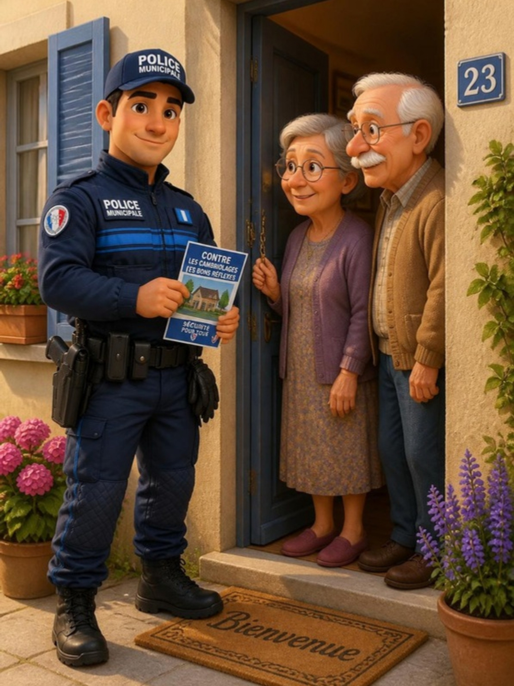
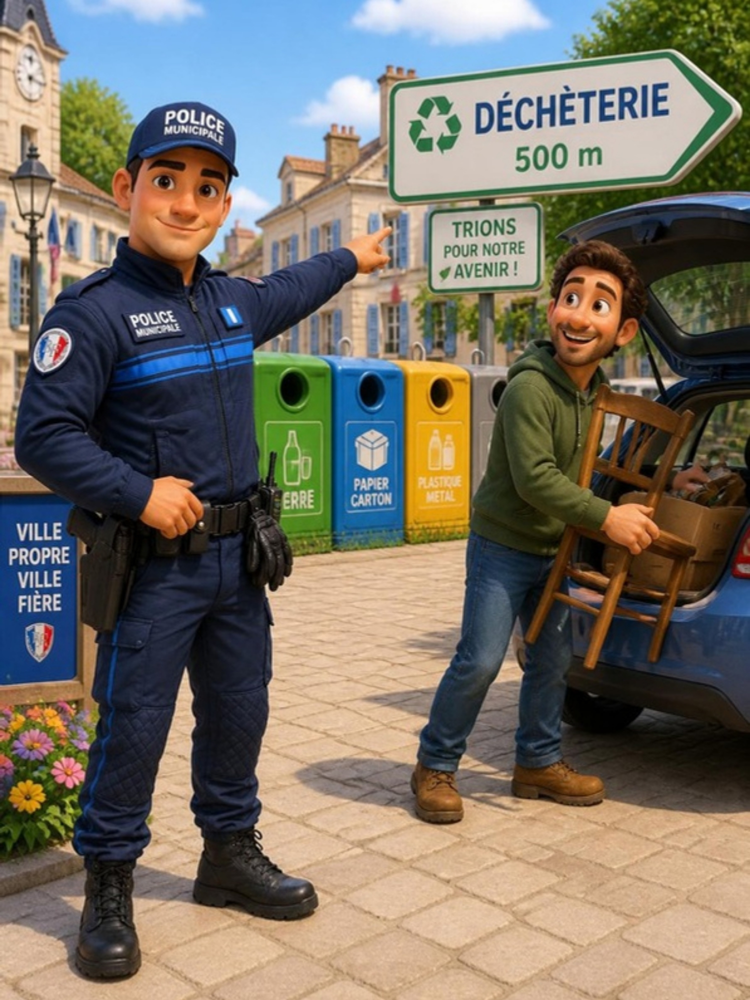
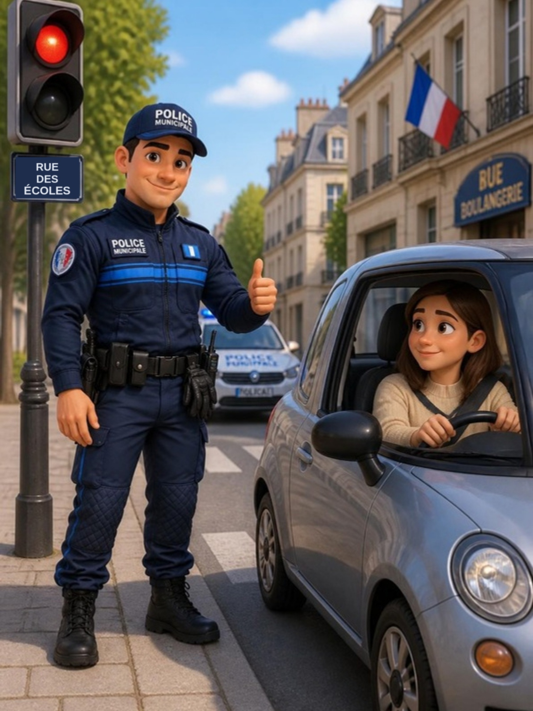

Police municipaleVotre commune
Sensibilisation__THEME__
Police municipaleVotre commune
Document de démonstration non officiel
Illustration générée par IA

Opération Tranquillité Vacances
Vous partez ?
Nous veillons

Trottinette électrique
Un seul à bord,
jamais sur le trottoir

Stationnement aux abords des écoles
Devant l'école,
je ne me gare pas

Faux démarcheurs, faux agents
Un inconnu à la porte ?
Je vérifie

Dépôts sauvages
Ma ville propre,
c'est l'affaire de tous

Au volant
Au volant,
le téléphone attendra